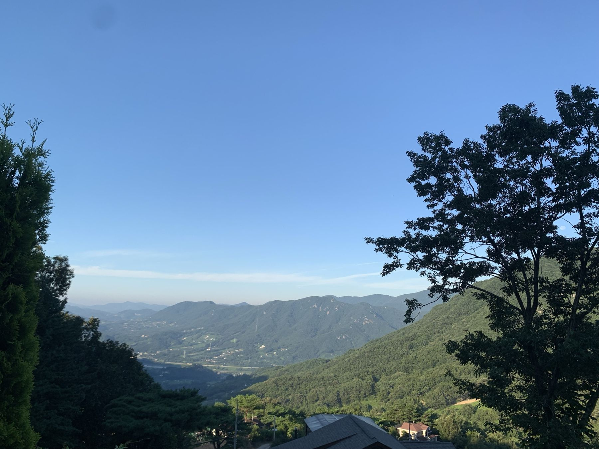

외송석쇠불고기
차로 6분얇은 간장 불고기를 연탄불에 구워 내는 집이에요. 반찬이 정갈하고 맛있어서, 밥을 즐기지 않는 솔숲지기도 한 공기를 다 비워요. 솔숲에서 가장 가까운 식당 중 하나로, 홍화원 근처에 있어요. 오후 7시까지 영업해요.
네이버 지도에서 보기
AROUND
솔숲에서 차로 20분 안
솔숲지기가 직접 다녀온,
스테이솔숲에서 차로 20분 안의
맛집·카페·가볼 만한 곳이에요.
시간은 모두 솔숲에서
차로 걸리는 시간이에요.
시골 식당은 가시기 전에 영업하는지 전화로 확인해 보세요.
얇은 간장 불고기를 연탄불에 구워 내는 집이에요. 반찬이 정갈하고 맛있어서, 밥을 즐기지 않는 솔숲지기도 한 공기를 다 비워요. 솔숲에서 가장 가까운 식당 중 하나로, 홍화원 근처에 있어요. 오후 7시까지 영업해요.
네이버 지도에서 보기외송석쇠불고기 바로 건너편
생선구이 한 마리와 돌솥밥, 정갈한 반찬이 나오는 솥밥 정식이 맛있어요. 점심에만 영업하고 오후 3시에 문을 닫아요. 강아지는 야외 테이블에서 함께할 수 있어요.
네이버 지도에서 보기성심원
카페지만 화덕피자가 특히 맛있고, 오븐치킨과 샐러드도 있어요. 오븐치킨은 미리 예약해야 기다리지 않고 먹을 수 있어요. 강변 경치가 멋진 곳이에요.
네이버 지도에서 보기원지
진하고 맛있는 한우 곱창전골 집이에요.
네이버 지도에서 보기원지 · 중식
솔숲지기가 산청에서 가장 좋아하는 중국집이에요. 해물짬뽕, 해물철판짜장, 탕수육을 추천하고, 그중 솔숲지기의 최애는 탕수육이에요.
네이버 지도에서 보기원지
간장 오리불고기에 버섯과 부추 같은 채소가 푸짐하게 들어가요. 직접 키운 상추와 쌈채소가 무한 제공이라 채소를 듬뿍 먹을 수 있어요.
네이버 지도에서 보기신등 단계
다슬기 맑은탕과 깔끔한 반찬이 좋은 집이에요. 다슬기탕이 처음이라 망설였는데, 국물이 시원해서 해장으로 그만이에요. 재료가 떨어지면 식사가 어려우니 꼭 전화로 예약하고 가세요. (010-4899-9686)
네이버 지도에서 보기신등 단계
산청에서 커피를 직접 로스팅하는 곳으로, 커피 애호가들이 즐겨 찾아요. 여러 종류의 원두를 로스팅하고, 산미 있는 커피도 있어요. 산미를 즐기지 않는 솔숲지기도 이곳에서 블렌딩해 준 커피는 맛있었어요. 사장님이 커피에 진심인 곳, 「한 잔의 진심을 담아내는 프레드릭」이에요.
네이버 지도에서 보기원지
동네 사랑방 같은 카페예요. 빵과 샌드위치를 사장님이 직접 만들고, 원두는 신등 단계 프레드릭 원두를 써요. 브런치와 샌드위치를 추천하고, 커피도 맛있어요. 간판이 작으니 입구를 잘 살펴보고 가세요.
네이버 지도에서 보기신등 단계
한옥의 정취와 잘 가꾼 정원, 친근한 개냥이들이 반겨 주는 카페예요. 대표 메뉴는 단계딸기라떼, 솔숲지기는 카페라떼를 좋아해요. 작은 책방 「밀당책방」도 함께 운영해요.
네이버 지도에서 보기둔철산 · 정취암 가는 길
솔숲에는 따로 산책로가 없어서, 산책을 원하시면 오가는 길이나 머무시는 동안 들르기 좋은 숲이에요. 위쪽에는 천문대도 있어요.
네이버 지도에서 보기기암절벽 위에 자리한 암자로, 내려다보는 경치가 정말 멋져요. 물론 솔숲보다는 못 하지만요. 일출 맛집이기도 해요.
네이버 지도에서 보기원지
데크길이 잘 갖춰진 강변 산책로예요. 원지에서 식사하고 걷기 좋아요.
네이버 지도에서 보기신등 단계
시골 목욕탕이에요. 군민 외 5,000원, 군민 3,500원.
네이버 지도에서 보기단성
원지를 지나서 있어, 원지에서 식사하고 산책하기 좋은 곳이에요. 반려견과 산책하기 가장 좋은 추천 공원이에요.
네이버 지도에서 보기